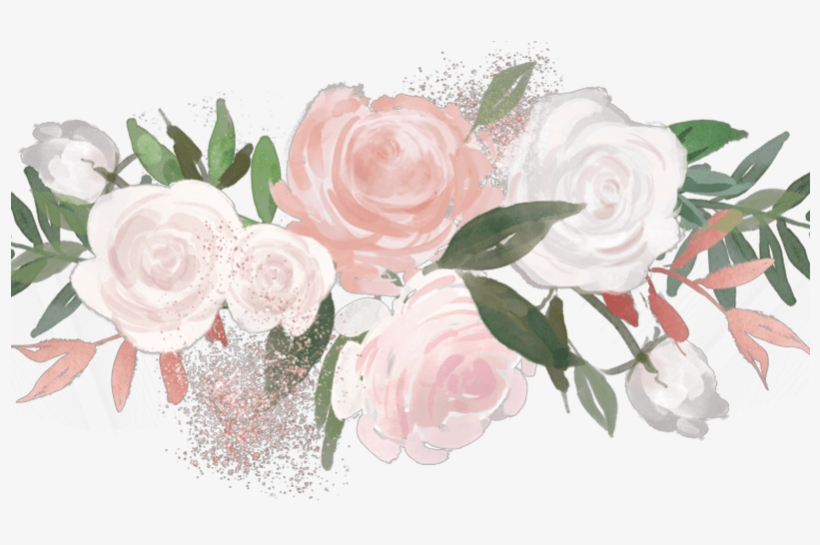
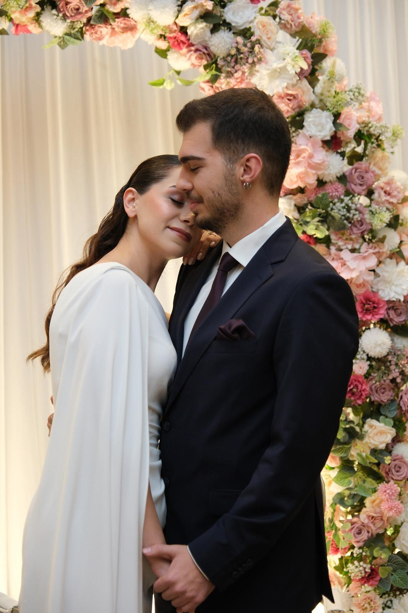
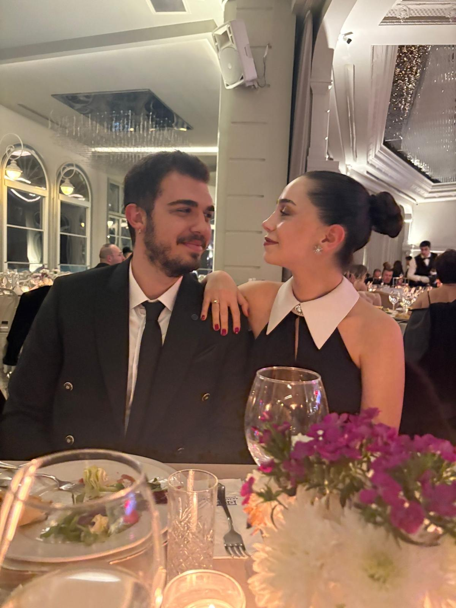
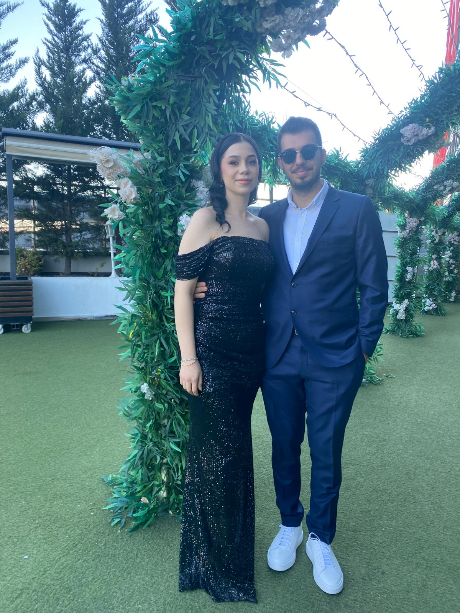
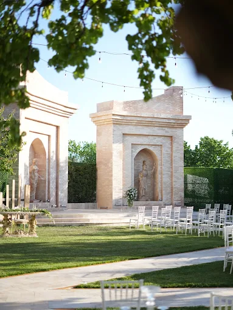
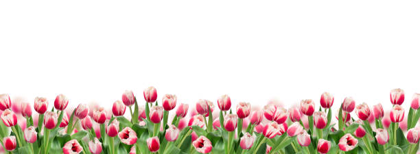

Kübra & Ege
YASEMİN & ABDULKERİM TUFAN
•
OYA & ERHAN TELLİ
5 Temmuz 2026
Bu özel günümüzde mutluluğumuzu paylaşmak için
sizleri de aramızda görmekten onur duyarız.
Geri Sayım
Büyük güne kalan süre
00
Gün
00
Saat
00
Dakika
00
Saniye
Hikayemiz
Birlikte başladığımız bu güzel yolculukta, en özel günümüzde sizleri de yanımızda görmekten mutluluk duyarız.



Lokasyon
Villa Marry Garden & Lounge

Kızılcaşar, Incek Şht. Savcı Mehmet Selim Kiraz Blv No:317, 06770
Gölbaşı/Ankara
Düğün Akışı
Program Detayları
19:00
Karşılama
Hoşgeldiniz kokteyli ve müzik dinletisi.
19:45
Nikah
Evet dediğimiz o özel an.
20:30
Yemek
Açık büfe akşam yemeği servisi.
21:30
Eğlence & Müzik
Dans pistinde buluşuyoruz!
23:00
Pasta Kesimi
Tatlı bir kapanış.
